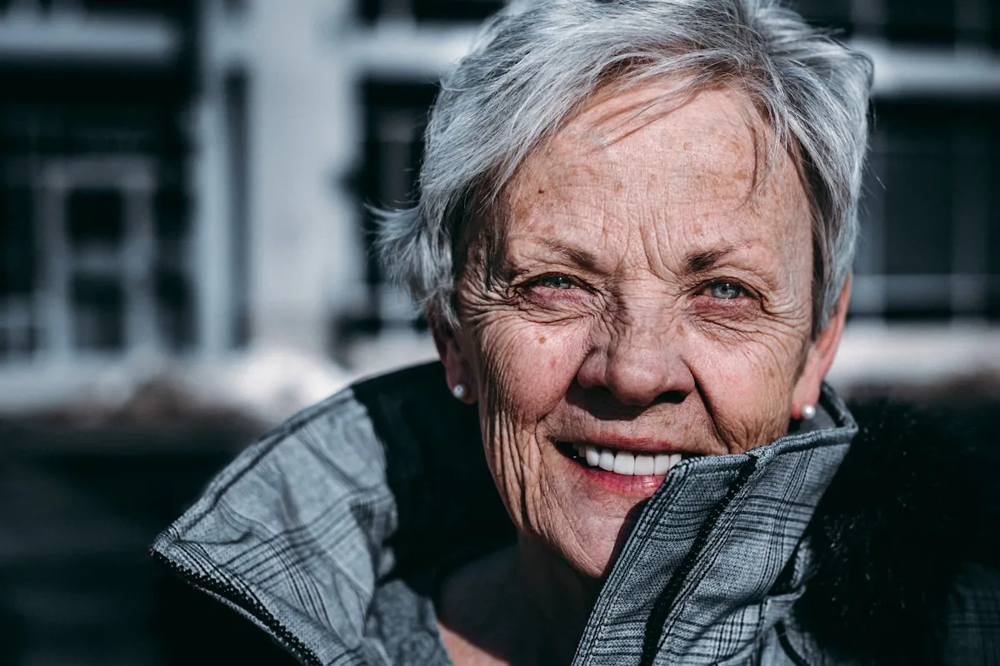

Kvoreth was built on a simple conviction: that the human nervous system responds to genuine cold in ways that no heated spa or synthetic cryotherapy chamber can replicate. We built in the mountain, with glacial water, in silence. That is the entire premise.

A former physiotherapist and competitive cold-water swimmer, Astrid Kvoreth-Hagen spent eight years studying the intersection of cold exposure and nervous system recovery before founding the sanctuary in 2012.
She was the first person in Norway to practice what she called "geological cold therapy" — the idea that the source material of the water matters as much as its temperature. Fjord water filtered through ancient granite has properties no laboratory can match.
She lives at the sanctuary year-round, leading two sessions per week personally for guests who specifically request her presence.
We do not treat silence as the absence of activity. It is the primary therapeutic tool. The 24-hour silence protocol is the most difficult thing we ask of guests — and the most transformative.
Glacial meltwater from 800 meters of fjord granite carries specific mineral signatures that cannot be synthesized. We will not relocate or replicate Kvoreth — the source is inseparable from the experience.
Eight guests maximum is not a capacity constraint — it is a deliberate architectural decision. Genuine quiet cannot exist in crowds. Kvoreth will never scale beyond what the silence can hold.
Kvoreth opens with two pools and four-guest capacity. The first season confirms the validity of the glacial source hypothesis.
After observing that guests who maintained silence showed measurably better recovery outcomes, the 24-hour silence protocol becomes mandatory.
A secondary glacial outflow at higher elevation is discovered and channeled, enabling three additional pools at 1°C colder than the original source.
Named Best Wellness Sanctuary in Scandinavia for the third consecutive year. Waitlist reaches 18 months for residential retreats.
Formal research collaboration with University of Oslo's Physiology Department begins. Kvoreth data becomes part of the largest longitudinal cold-immersion study in Europe.